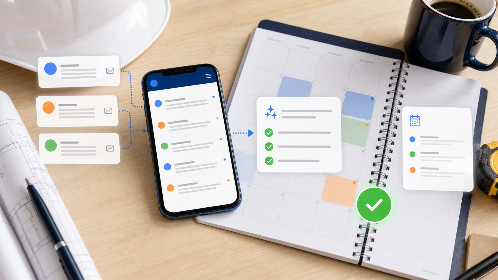

匿名改善ケース / 経理・バックオフィス
月末の請求書確認を、入力作業から例外チェックへ変える
請求書、領収書、振込先、承認待ち。月末になると経理担当と社長の机に、確認すべき紙とPDFが積み上がります。AIに読み取りと整理を渡し、人は支払い判断と例外確認に集中するケースです。

先に結論
この事例の本質は、経理を「全部入力」から「差分と例外の確認」へ変えたことです。
改善前は、請求書PDFを開き、金額、支払先、期限、部門、注文番号を人が見て入力していました。迷うたびに過去メールを探し、社長へ「これは払ってよいですか」と確認が戻ります。
改善後は、AIが請求書を読み、支払先、金額、期限、発注情報、過去の支払い履歴を並べます。人は、金額差異、初めての取引先、二重請求の疑い、支払い保留だけを重点的に見ます。
改善後の実感
月末の半日が、確認と判断の時間に戻ります。
PDFを先に読む
請求書の金額、支払先、期限、注文番号をAIが一覧にします。
過去情報と照合する
いつもの取引先か、過去と金額が大きく違わないかを確認候補にします。
人が承認する
支払い可否、保留、差し戻し、取引条件は経理担当と社長が判断します。
ある日のナラティブ
月末の17時18分、社長の机に請求書ファイルが残っていました。
経理担当は朝から請求書PDFを開き、Excelに金額を写し、フォルダ名を直していました。夕方、社長の机には「確認お願いします」と付箋のついたファイルが残っています。社長も内容を見たいのですが、今日中に見積と採用面接の返事もあります。
改善後は、AIが請求書を読み取り、通常支払い、金額差異、初取引、期限間近、二重請求候補に分けます。経理担当はAIの一覧を見て、金額差異だけコメントを入れ、社長へ確認依頼を送ります。
社長は全件を開かず、例外の5件だけを確認します。最後に支払い承認ボタンを押すのは人です。けれど、判断する前の探す時間がなくなったため、月末の確認が夜まで残らなくなりました。
AIが進める流れ
材料を集め、確認順に並べます。
メール添付、PDF、スキャン画像から必要項目を抜き出します。
注文番号、取引先、金額、期限の不一致を探します。
通常処理、担当確認、社長確認、保留候補を分けます。
支払い、保留、差し戻し、条件変更は人が決めます。
人とAIの分担
お金の判断は、人が持ちます。
AIに渡す作業
- 請求書の読み取り
- 支払先と期限の整理
- 過去情報との照合
- 二重請求候補の抽出
- 承認一覧の作成
人が見る判断
- 支払い可否
- 取引条件
- 例外の確認
- 税務・会計上の判断
- 振込前の最終承認
真似する順番
まず、月末に迷う請求書だけを集めます。
通常、差異あり、社長確認、保留に分けます。
金額、期限、発注番号、支払先、担当者を揃えます。
入力ではなく、確認しやすい表を作らせます。
金額や取引先ごとに誰が見るかを決めます。
自社に置き換える
月末の確認作業を、例外チェックへ変えます。
請求書、領収書、承認待ち、支払い確認のどこに時間が消えているかを整理します。
30分無料診断を申し込む